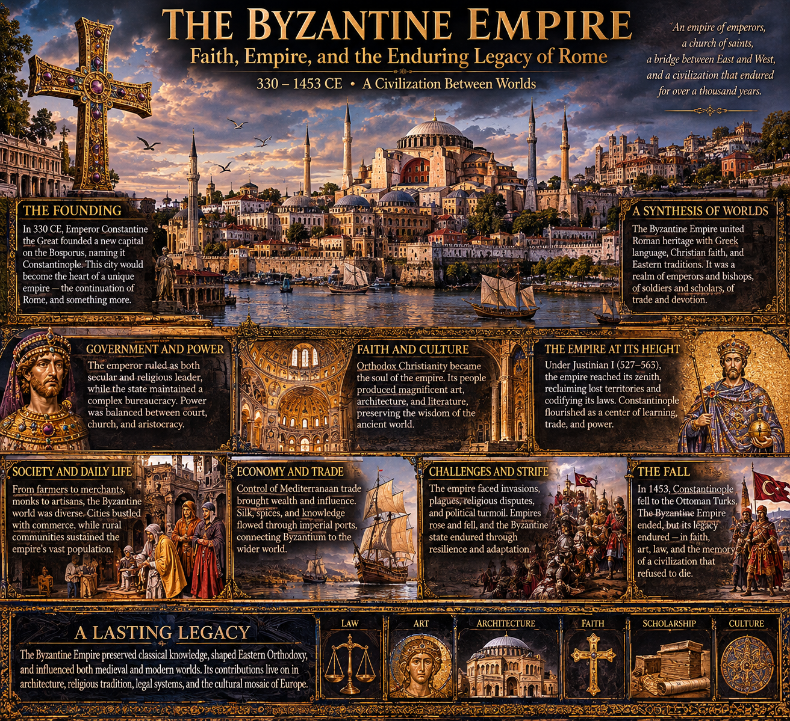

Byzantine empire

THE BYZANTINE EMPIRE
An exhaustive academic documentary of the Eastern Roman civilization
330–1453 CE
PART I — THE FOUNDATIONS OF THE EASTERN ROMAN WORLD
- The Roman inheritance
The Byzantine Empire emerged from the political and administrative transformation of the Roman Empire, rather than from the sudden appearance of an entirely new civilization.
By the third century CE, Rome governed territories extending across much of Europe, North Africa, and western Asia. Its enormous geographical reach created persistent administrative problems. Political succession, military defense, taxation, regional economic differences, and communication across great distances all placed considerable pressure upon imperial government.
The empire had already experienced periods of political fragmentation and competing emperors.
During the reign of Diocletian (284–305), the government underwent extensive reorganization. The emperor expanded the administrative structure, altered provincial organization, and established the Tetrarchy, a system involving multiple emperors who shared responsibility for governing the empire.
This arrangement was intended to improve military responsiveness and political succession.
It did not create a permanently stable division.
Constantine emerged victorious from the subsequent civil wars and became sole emperor in 324.
His reign fundamentally altered the political and religious direction of the Roman world.
- Constantine and the foundation of Constantinople
The ancient Greek settlement of Byzantion occupied a strategically important position beside the Bosporus, the narrow waterway connecting the Black Sea with the Sea of Marmara and, through the Dardanelles, the Aegean and Mediterranean.
The location offered several advantages:
- Control over important maritime passageways.
- Access to Black Sea agricultural and commercial networks.
- Proximity to the Balkans and Anatolia.
- Defensible geographical approaches.
- Access to major military routes.
- A position between European and Asian territories.
Constantine selected the settlement as the location of a new imperial capital.
The city was formally dedicated in 330 CE and became known as Constantinople.
Its official ideological designation was New Rome.
This designation was significant. Constantine was not presenting his capital as the headquarters of an unrelated successor state. He was creating another center of Roman imperial authority.
The city was expanded with palaces, administrative buildings, churches, public spaces, defensive structures, ceremonial avenues, and monuments.
A Senate was established, and the institutions of Roman government were reproduced and adapted to the new capital.
Constantinople gradually became the most important political and administrative center of the eastern Mediterranean.
- The geographical advantages of Constantinople
The Bosporus provided a natural maritime connection between several major economic regions.
Ships entering the Black Sea could transport grain, timber, fish, enslaved people, and other commodities.
The city could receive supplies from the surrounding agricultural regions and from more distant territories.
Its position also allowed imperial authorities to monitor commercial movement between the Black Sea and Mediterranean.
The city's defensive position was particularly important.
Its northern and southern maritime approaches were protected by water, while its western land approaches could be fortified.
The combination of geographical defense and engineered fortification made Constantinople exceptionally difficult to capture.
Its defensive system would be expanded over several centuries.
- The division of imperial government
The Roman Empire experienced repeated administrative divisions during the fourth century.
The division associated with the death of Theodosius I in 395 is particularly important.
His sons inherited separate imperial administrations:
- Arcadius governed the eastern empire.
- Honorius governed the western empire.
This division became a lasting political reality, although both courts continued to claim the inheritance of Roman imperial legitimacy.
The eastern government possessed Constantinople as its principal capital.
The western government maintained its own political centers, eventually operating primarily from Ravenna.
The two administrations continued to share Roman traditions, legal concepts, diplomatic relationships, and Christian institutions.
The western empire experienced increasing instability during the fifth century.
In 476, the western imperial office in Italy was terminated when the Germanic military leader Odoacer deposed Romulus Augustulus.
The eastern Roman Empire survived.
This event is conventionally used to mark the end of the Western Roman Empire, but it did not terminate the Roman political tradition.
The emperors at Constantinople continued to regard themselves as Roman emperors.
- The meaning of Roman identity
The inhabitants of the Eastern Roman Empire generally identified themselves as Romans.
The Greek term Rhomaioi referred to the Roman people.
This identity could coexist with Greek language, regional traditions, religious affiliation, and local ethnic identities.
A person could be Greek-speaking, Christian, and culturally associated with Anatolia while simultaneously identifying politically as Roman.
The empire also contained Armenian, Slavic, Syriac-speaking, Jewish, Arab, Latin-speaking, and other communities.
Roman identity was therefore a political and cultural framework rather than a simple description of linguistic ancestry.
The word Byzantine is a modern historical designation.
It is useful for identifying the medieval Eastern Roman civilization, but the historical inhabitants did not ordinarily understand themselves as members of a civilization separate from Rome.
PART II — THE IMPERIAL STATE
- The emperor
The emperor occupied the highest political position.
He was the head of government, commander-in-chief, ultimate source of imperial appointments, and central figure in the empire's public ceremonial system.
The emperor's legitimacy was expressed through Roman political traditions and Christian religious ideology.
His authority was represented as part of a divinely ordered political universe.
This did not mean that emperors possessed unlimited practical power.
Their authority depended upon the cooperation of military commanders, court officials, provincial administrators, aristocratic families, ecclesiastical authorities, and the population of Constantinople.
A ruler who lost military support or political legitimacy could be overthrown.
Imperial succession was not governed by one consistently enforced hereditary system.
Emperors could inherit power, be acclaimed by the army, receive support from court factions, marry into ruling families, or seize the throne through military action.
Dynastic continuity was desirable but not guaranteed.
- Imperial legitimacy and political ceremony
The imperial court developed a complex ceremonial system.
Ceremonies communicated hierarchy and authority through clothing, movement, music, titles, architectural space, and ritualized interaction.
Access to the emperor was carefully controlled.
The palace was not merely a residence.
It was the physical center of government and the institutional environment surrounding the emperor.
Court ceremonies established the relative positions of officials and foreign representatives.
The emperor's clothing and ceremonial objects communicated his position within the political and religious hierarchy.
Purple textiles, elaborate crowns, jewelry, insignia, and richly decorated ceremonial garments became associated with imperial authority.
The imperial image was reproduced on coins, seals, monuments, and official documents.
- The Great Palace
The Great Palace of Constantinople developed into an extensive complex.
It included residential quarters, administrative facilities, reception halls, chapels, courtyards, gardens, and ceremonial spaces.
Different emperors expanded or modified its structures.
The palace contained specialized spaces for audiences, banquets, diplomatic receptions, and religious ceremonies.
Its architecture organized political access.
A visitor's movement through the palace could communicate the hierarchy of the state before a single word was spoken.
The palace also contained a large population of workers and officials.
Its daily operation required cooks, servants, guards, scribes, clergy, craftsmen, administrators, and other personnel.
- The imperial bureaucracy
The Byzantine state maintained an extensive administrative apparatus.
Its responsibilities included:
- Tax collection.
- Land registration.
- Military recruitment and provisioning.
- Legal administration.
- Public construction.
- Coin production.
- Diplomatic correspondence.
- Regulation of trade.
- Maintenance of roads.
- Management of imperial property.
- Provincial government.
- Control of strategic resources.
Officials were appointed to specialized responsibilities.
Administrative titles changed over time, and the structure of government was repeatedly reorganized.
The empire did not possess one unchanging bureaucracy across eleven centuries.
Late Roman offices developed into medieval institutions, while older administrative arrangements were modified or replaced.
The ability to preserve and reorganize administrative expertise was one of the principal reasons for the empire's longevity.
- The Senate and aristocracy
The Senate of Constantinople inherited the prestige of the Roman Senate.
Its political importance changed over time.
Senators and members of the aristocracy could hold high administrative and military positions.
Wealthy families acquired land, influence, and connections to the imperial court.
Aristocratic power could become a source of stability, providing experienced administrators and military leaders.
It could also create competition with the emperor.
Provincial magnates sometimes accumulated extensive estates and local influence.
The central government repeatedly attempted to prevent powerful families from becoming independent political authorities.
This tension between central government and aristocratic property holders was a recurring feature of Byzantine political history.
- The provincial administration
The empire's territorial organization changed substantially over time.
During Late Antiquity, the empire possessed provinces administered by governors under larger regional structures.
In the seventh century, military and administrative organization changed in response to the loss of territory and persistent external threats.
The theme system became particularly important.
Themes were territorial administrative and military districts.
Their organization varied, and their development was gradual rather than the result of one comprehensive reform.
Military commanders known as strategoi exercised authority within these districts.
The system connected regional defense with the mobilization of resources.
Over subsequent centuries, themes changed in size and function.
New administrative units emerged as the empire expanded or reorganized its territories.
- The tax system
Taxation was fundamental to Byzantine government.
The state needed revenue to pay soldiers, maintain fortifications, support officials, construct infrastructure, and conduct diplomacy.
Agricultural land was a major source of taxable wealth.
The government maintained systems for assessing property and determining obligations.
Taxation could be imposed in money or in forms of produce and services.
The details changed over time.
The state also collected customs duties and derived income from imperial estates, commercial regulation, and other sources.
The Byzantine monetary system was particularly important because it allowed the government to pay soldiers and officials using standardized currency.
The gold solidus, introduced under Constantine, became one of the most influential gold coins in the medieval world.
Its reliability supported confidence in imperial payments and international exchange for centuries, although its value and form changed over time.
PART III — THE ECONOMIC LIFE OF THE EMPIRE
- Agriculture as the foundation
Agriculture supplied the overwhelming material foundation of Byzantine society.
Most people lived in rural settlements or maintained direct connections with agricultural production.
The countryside produced grain, wine, olive oil, legumes, fruits, vegetables, livestock, and other commodities.
Agricultural conditions varied considerably.
Anatolia contained extensive agricultural regions, as did parts of the Balkans and the eastern Mediterranean.
Egypt, before its conquest by Arab armies in the seventh century, was particularly important as a grain-producing region.
The empire's ability to supply Constantinople depended upon a combination of nearby production and long-distance transportation.
- The village
The village was a fundamental economic and administrative institution.
Villages contained households whose inhabitants cultivated land, maintained animals, produced goods, and fulfilled tax obligations.
A village could possess a collective legal identity.
Its inhabitants might cooperate in matters involving taxation, land boundaries, water access, and local responsibilities.
The household was the basic unit of agricultural production, but the village connected individual families into a larger economic community.
Peasants were not necessarily isolated subsistence farmers.
They could sell surplus crops, participate in local markets, produce textiles, and engage in specialized crafts.
The economic position of a household depended upon landholding, family size, access to animals, debt, taxation, and local political relationships.
- Landownership
Land could belong to individual households, aristocratic families, monasteries, churches, and the imperial government.
Large estates became increasingly important during particular periods.
Wealthy landowners could acquire smaller properties and establish substantial regional influence.
This created concern among imperial authorities because the independence of large landholders could weaken the state's fiscal and military foundations.
Smallholding farmers were especially important to the empire's tax system.
The government therefore sometimes attempted to protect agricultural households from excessive aristocratic acquisition.
The effectiveness of these policies varied.
The relationship between large estates and small agricultural holdings was one of the major long-term economic questions in Byzantine history.
- Livestock and pastoralism
Animal husbandry was important throughout the empire.
Sheep and goats supplied wool, milk, meat, and hides.
Cattle were used for agricultural work and food.
Horses and mules were essential to military transportation and communications.
Donkeys provided transport for ordinary households and commercial activity.
Pigs were raised in suitable environments, particularly where woodland and other grazing resources were available.
Pastoral communities sometimes moved seasonally between grazing areas.
The state depended upon livestock for food, military equipment, transportation, and taxation.
- Constantinople as an economic center
Constantinople was one of the largest and most commercially important cities of medieval Europe.
Its location connected maritime trade routes across the Mediterranean and Black Sea.
Merchants brought goods from many regions.
These included:
- Grain.
- Wine.
- Olive oil.
- Fish.
- Timber.
- Metals.
- Textiles.
- Silk.
- Spices.
- Ceramics.
- Luxury objects.
- Precious stones.
- Manufactured goods.
The city also served as an administrative center.
Its population included merchants, artisans, officials, soldiers, clergy, servants, laborers, and wealthy landowners.
The needs of such a large population required complex systems of provisioning and distribution.
- The grain supply
Food security was a major concern.
Constantinople required enormous quantities of grain.
During the early centuries, Egypt was a major supplier.
The loss of Egypt to Arab armies in the seventh century required significant adjustments to the imperial food system.
The city increasingly depended upon supplies from other regions, including areas around the Black Sea and the Balkans.
Grain was transported by ship and distributed through organized systems.
The availability and cost of food could influence political stability.
Disruption of supplies could create serious problems for the urban population.
- Trade and commercial networks
Byzantine merchants participated in extensive international exchange.
The empire maintained connections with:
- Western Europe.
- The Italian maritime cities.
- The Islamic world.
- The Caucasus.
- Central Asia.
- The Black Sea.
- The Red Sea trade system.
- The eastern Mediterranean.
- The Indian Ocean through intermediary networks.
Commercial goods moved through a combination of maritime and overland routes.
Merchants operated within a complicated environment of customs duties, state regulations, commercial privileges, and changing political boundaries.
Trade was not equally prosperous in every period.
The empire experienced commercial expansion, contraction, and regional transformation.
- Silk production
Silk was one of the most prestigious Byzantine products.
For centuries, silk textiles were associated with wealth, diplomatic exchange, and imperial ceremony.
The empire initially depended heavily upon imported silk from eastern commercial networks.
According to later Byzantine accounts, silkworm cultivation and silk production became established within the empire during the sixth century.
The precise chronology and circumstances of this development are debated.
Byzantine silk workshops eventually produced textiles for domestic consumption, ecclesiastical use, and export.
Silk manufacture required specialized knowledge.
Silkworm cultivation depended upon mulberry trees and controlled production conditions.
The processing of cocoons, reeling, spinning, dyeing, and weaving required skilled labor.
Silk production became an important component of imperial prestige and commercial activity.
- Urban manufacturing
Byzantine cities supported numerous specialized trades.
These included:
- Textile production.
- Pottery.
- Glassmaking.
- Metalworking.
- Leatherworking.
- Shipbuilding.
- Jewelry production.
- Construction.
- Food processing.
- Woodworking.
- Book production.
Craft production could take place in small workshops, family enterprises, or larger institutional operations.
The state sometimes regulated production and trade, particularly where strategically important goods were concerned.
The relationship between private enterprise and government intervention changed over time.
- Coinage and monetary systems
Byzantine coinage was among the most important monetary traditions of medieval history.
The solidus, later known in Greek as the nomisma, was a gold coin with a long history of relative stability.
It was used for government payments, large transactions, and international exchange.
Silver and copper coinage served other economic purposes.
The government controlled coin production and could adjust monetary policy.
Over time, changes in military expenditure, fiscal conditions, and economic pressures affected the monetary system.
In the eleventh century, the gold coin underwent significant debasement under several rulers.
Alexios I Komnenos later introduced monetary reforms, including the hyperpyron.
The history of Byzantine coinage provides important evidence of the relationship between government finance and economic change.
PART IV — RELIGION AND THE CHRISTIAN WORLD
- The Christianization of the Roman state
Christianity became increasingly influential during the fourth century.
Constantine's reign marked a major change in the relationship between imperial government and Christianity.
The Edict of Milan in 313 established a policy of religious toleration and restored confiscated Christian property.
Constantine supported Christian institutions and participated in the political organization of the church.
He convened the Council of Nicaea in 325.
This council addressed theological disputes, particularly the relationship between the Father and the Son.
Christianity gradually became deeply integrated into imperial government.
Under Theodosius I, Nicene Christianity received official imperial support, and non-Nicene Christian positions and traditional public pagan cults faced increasing restrictions.
The transition was neither instantaneous nor uniform.
Religious practices continued to vary by region, and older traditions survived in different forms.
- The Orthodox Christian tradition
The Byzantine Empire became a major center of Eastern Orthodox Christianity.
Its religious institutions developed distinctive liturgical, theological, and administrative traditions.
The church was organized through a hierarchy of bishops, priests, deacons, monasteries, and patriarchates.
Constantinople's patriarch eventually became one of the most influential ecclesiastical figures in Christendom.
The relationship between emperor and patriarch was complex.
The emperor possessed considerable influence over church affairs, but ecclesiastical authorities maintained their own responsibilities and could oppose imperial decisions.
- The patriarch of Constantinople
The patriarch was the leading bishop of Constantinople.
His office gained increasing prestige because the city was the imperial capital.
The patriarch participated in theological debates, ecclesiastical administration, religious ceremonies, and political affairs.
He was not simply an imperial employee.
The relationship between emperor and patriarch could involve cooperation, disagreement, and direct confrontation.
Some patriarchs were powerful political figures.
Others were removed or replaced during religious and political disputes.
- The five major patriarchal centers
The early Christian world recognized several major ecclesiastical centers:
- Rome.
- Constantinople.
- Alexandria.
- Antioch.
- Jerusalem.
Their relative authority was a matter of historical development and theological debate.
Rome claimed a distinctive primacy based upon its connection with the apostle Peter and its position within the early Christian world.
Constantinople's prestige was connected to its status as New Rome.
The growing differences between eastern and western Christian institutions became increasingly important over time.
- Christian theology
Byzantine theology addressed questions concerning the nature of God, the Trinity, Christ, salvation, human nature, divine grace, and the relationship between the visible and invisible worlds.
These debates were not merely abstract philosophical exercises.
They affected religious practice, imperial legitimacy, political alliances, and ecclesiastical unity.
Theological disputes could divide communities and generate long periods of conflict.
The Council of Chalcedon in 451 addressed the nature of Christ.
Its definition became a major point of division between Chalcedonian Christianity and several eastern Christian traditions.
The resulting divisions involved theological interpretation, ecclesiastical authority, regional identity, and political circumstances.
- Monasticism
Monasticism became one of the most influential institutions of Byzantine society.
Monks and nuns pursued religious lives organized around prayer, discipline, asceticism, and communal or solitary devotion.
Monastic communities existed throughout the empire.
Some were located near cities.
Others occupied remote mountains, islands, and rural landscapes.
Monasteries could possess extensive landholdings, agricultural resources, workshops, libraries, and valuable religious objects.
They provided education, hospitality, medical assistance, charitable services, and religious instruction.
They could also become important economic institutions.
Monastic property was supported through donations, imperial patronage, private foundations, and accumulated estates.
- Mount Athos
Mount Athos became one of the most important centers of Orthodox monasticism.
Located in northern Greece, it developed into a major monastic community.
Its monasteries preserved manuscripts, liturgical traditions, religious art, and theological learning.
Monastic communities maintained their own rules and internal institutions while operating within the wider political environment.
Mount Athos remains an important center of Orthodox Christian monastic life.
- Saints and pilgrimage
The veneration of saints was a major feature of Byzantine Christianity.
Saints were understood as individuals whose lives and deaths demonstrated extraordinary holiness.
Relics associated with saints could become objects of devotion.
Pilgrimage sites attracted visitors seeking healing, spiritual assistance, or religious fulfillment.
Churches and monasteries developed around important relics and sacred locations.
Hagiography, the writing of saints' lives, became a major literary genre.
These accounts provide valuable evidence about religious ideals, social expectations, and popular beliefs, although they must be distinguished from modern documentary biography.
- Icons and religious images
Icons were painted representations of Christ, the Virgin Mary, saints, and other sacred figures.
They played an important role in Byzantine religious life.
Icons could be used in private devotion, church worship, public processions, and religious ceremonies.
Theological arguments concerning images became especially intense during the eighth and ninth centuries.
The controversy over religious images is known as Iconoclasm.
PART V — ICONOCLASM AND THE RELIGIOUS CRISIS
- The first period of Iconoclasm
During the eighth century, certain Byzantine emperors opposed the veneration of religious images.
Leo III and Constantine V were particularly important in the development of imperial Iconoclasm.
The controversy involved questions about representation, worship, divine nature, and the possibility of depicting Christ.
Iconoclasts argued that certain forms of image veneration were religiously improper.
Their opponents defended icons as legitimate representations that could direct devotion toward the sacred figures depicted.
The controversy also involved political and ecclesiastical authority.
Imperial intervention affected monasteries, clergy, and religious communities.
- The restoration of icons
The Second Council of Nicaea in 787 restored the veneration of icons within the Eastern Roman Church.
The controversy nevertheless continued.
A second period of Iconoclasm began in the early ninth century.
In 843, the empress Theodora and her supporters restored icon veneration.
This event became known as the Triumph of Orthodoxy.
It established the lasting importance of icons within Eastern Orthodox Christianity.
The theological distinction between veneration and worship became central to the Orthodox defense of religious imagery.
PART VI — THE MILITARY SYSTEM
- The Byzantine army
The Byzantine army was a professional and administrative institution that changed considerably over time.
It inherited the military traditions of Rome while adapting to new geopolitical conditions.
Its composition included infantry, cavalry, archers, specialized units, naval personnel, and mercenaries.
The empire's military effectiveness depended upon training, logistics, taxation, recruitment, fortification, intelligence, and diplomatic strategy.
Military organization cannot be understood solely through battlefield tactics.
It was connected directly to the economic and administrative structure of the state.
- The thematic military system
The theme system became especially important after the seventh-century territorial losses.
Military forces were organized within regional administrative districts.
Local military resources could be mobilized to defend territories.
The relationship between soldiers, landholding, and military obligations evolved over time.
The older interpretation of themes as a simple system in which every soldier received a standard military farm is now regarded as overly simplified.
Military personnel possessed varied economic arrangements, and the state continued to use multiple forms of recruitment and payment.
- Heavy cavalry and the cataphract
Byzantine armies made extensive use of cavalry.
Some units were heavily armored and could include armored riders and horses.
The cataphract became an important military type.
Cavalry was useful for reconnaissance, pursuit, rapid movement, and shock action.
The empire also employed mounted archers and other mobile troops.
Its military manuals demonstrate a sophisticated understanding of battlefield organization.
- Infantry
Infantry remained essential.
Soldiers could be equipped with shields, spears, swords, bows, and protective armor.
Different units had different responsibilities.
Infantry could defend fortified positions, support cavalry, hold terrain, and conduct siege operations.
The equipment and organization of infantry changed over time.
- Military manuals
The Byzantines produced several important military texts.
These included:
- Strategikon, traditionally associated with Maurice.
- Tactica of Leo VI.
- Praecepta Militaria associated with Nikephoros II Phokas.
- De velitatione bellica, a text concerning frontier warfare.
- De re militari, in its wider Roman literary tradition.
These works addressed military organization, tactics, reconnaissance, logistics, discipline, and the management of different types of warfare.
They demonstrate that Byzantine military thought was a developed intellectual discipline.
- Greek fire
One of the most famous Byzantine military technologies was Greek fire.
It was an incendiary weapon used particularly in naval warfare.
The exact composition remains uncertain.
Historical descriptions indicate that it could be projected from specialized devices, including siphons mounted on ships.
Its ability to burn on water made it especially intimidating.
Greek fire contributed to the defense of Constantinople during important naval conflicts.
Its technological details were closely guarded.
The weapon was part of a wider Byzantine tradition of adapting engineering and chemical knowledge to military requirements.
- The navy
The Byzantine navy protected maritime routes and supported military operations.
Warships were used to transport soldiers, attack enemy fleets, and defend coastal territories.
The dromon was a major Byzantine warship type.
It could carry oarsmen, sailors, soldiers, and specialized equipment.
Naval warfare required shipyards, timber, rope, sails, trained crews, and logistical support.
The empire's naval power fluctuated according to fiscal resources and political circumstances.
- Fortifications and frontier defense
Fortifications were essential to Byzantine military strategy.
Cities possessed defensive walls.
Frontier regions contained castles, fortified settlements, observation points, and military installations.
The empire sometimes relied upon layered defense rather than attempting to defeat every invading army in open battle.
The purpose of fortifications was to delay enemy movement, protect populations, preserve supply centers, and provide opportunities for counterattack.
The Theodosian Walls of Constantinople were the most famous example of this defensive tradition.
- The Theodosian Walls
The land walls of Constantinople were constructed primarily during the reign of Theodosius II in the fifth century.
They consisted of multiple defensive elements.
The system included an outer moat, an outer wall, an inner wall, towers, and defensive passages.
The walls were repeatedly repaired and modified.
They protected the city against numerous attacks.
Their design made a direct assault extremely difficult.
They remained one of the most formidable defensive systems in the medieval world.
Their eventual breach in 1453 was made possible through a combination of Ottoman military organization, artillery, siege operations, and the Byzantines' limited defensive resources.
PART VII — THE PEOPLE AND EVERYDAY SOCIETY
- Population and diversity
The Byzantine Empire contained numerous populations with different linguistic, cultural, and regional backgrounds.
Greek gradually became the dominant language of government and much of urban life, particularly after the seventh century.
However, the empire was never linguistically uniform.
Latin remained important in the early centuries.
Armenian, Syriac, Slavic, Arabic, Georgian, and other languages were spoken in various regions and communities.
The population's religious identity was also diverse.
Orthodox Christianity became dominant, but Jewish communities and other Christian traditions remained present.
The empire's ethnic and linguistic composition changed whenever its territorial boundaries changed.
- Social hierarchy
Byzantine society contained distinct levels of wealth, authority, and legal status.
The emperor and imperial family occupied the highest symbolic position.
Below them were court officials, senior military commanders, aristocratic households, wealthy landowners, and major ecclesiastical authorities.
Other groups included merchants, artisans, soldiers, agricultural producers, clergy, monks, servants, and enslaved individuals.
These categories were not entirely fixed.
Military service, education, imperial patronage, marriage, and commercial success could allow individuals to improve their social position.
However, wealth and family connections remained important sources of influence.
- The family
The household was a central institution.
Families organized property, inheritance, marriage, childcare, labor, and religious obligations.
Marriage was generally understood as a religious and legal institution.
The church gradually developed an increasingly important role in marriage law.
Inheritance practices varied according to legal status and historical period.
Families could own land, maintain commercial enterprises, and employ servants or dependent laborers.
Extended kinship networks were important in aristocratic and urban society.
- Women
Women participated in Byzantine society in a wide range of roles.
They managed households, produced textiles, participated in commerce, inherited property, and contributed to religious institutions.
Some women possessed considerable wealth and political influence.
Imperial women could exercise authority through marriage, regency, patronage, and direct political participation.
Empresses such as Theodora, Irene, Zoe, and Theodora Porphyrogenita are examples of women who occupied major positions in imperial government.
Their experiences should not be taken as representative of all women.
Most women lived within household structures shaped by patriarchal social expectations.
Women's legal and economic opportunities depended upon social position, wealth, family connections, and regional circumstances.
- Childhood
Children were raised within family and community environments.
Their early lives involved religious instruction, household responsibilities, socialization, and, where available, formal education.
Elite children could receive extensive instruction.
Other children learned practical skills through family occupations.
Agricultural households required knowledge of farming and animal care.
Urban households could introduce children to commerce and craftsmanship.
Childhood experiences varied substantially according to wealth and social circumstances.
- Food
Byzantine food culture reflected the agricultural diversity of the empire.
Common foods included:
- Bread.
- Wheat and barley products.
- Lentils and beans.
- Olive oil.
- Cheese.
- Fish.
- Vegetables.
- Fruits.
- Wine.
- Meat.
- Herbs and spices.
Bread was a central food.
Its quality and availability varied according to economic status.
Wine was consumed widely, although it was often diluted with water.
Fish was particularly important in coastal communities and during religious fasting periods.
Meat consumption depended upon income and regional availability.
The elite possessed access to more varied and expensive foods.
Spices and luxury ingredients could arrive through international trade.
- Clothing
Clothing reflected climate, occupation, wealth, gender, and social position.
Textiles included wool, linen, and silk.
Ordinary people wore practical garments suited to daily labor.
The wealthy possessed more elaborate clothing.
Silk was especially prestigious.
Imperial garments were carefully designed to communicate rank.
Clothing also played a role in religious and ceremonial life.
Clergy wore garments associated with ecclesiastical responsibilities.
Monastic clothing reflected ideals of discipline and religious separation.
- Housing
Byzantine housing varied enormously.
Rural homes were often constructed using local materials such as stone, timber, and mud brick.
Urban housing included individual houses, apartment-like structures, workshops, and larger elite residences.
Wealthy households could possess courtyards, decorative floors, private chapels, and multiple rooms.
Ordinary households occupied more limited spaces.
Constantinople contained densely populated neighborhoods.
Fire, disease, overcrowding, and limited access to clean water were recurring urban problems.
- Entertainment
Entertainment was an important feature of Byzantine urban culture.
The Hippodrome of Constantinople was a major public gathering place.
Chariot racing attracted enormous audiences.
The Blues and Greens were prominent factions associated with the racing culture.
These groups could develop political and social significance beyond sporting competition.
Public ceremonies, religious festivals, theatrical performances, music, storytelling, and seasonal celebrations also formed part of urban life.
The Hippodrome was not merely an entertainment venue.
It was a location where the emperor and population interacted symbolically.
PART VIII — EDUCATION, SCIENCE, AND INTELLECTUAL CULTURE
- Classical education
Byzantine education preserved many elements of the ancient Greek and Roman intellectual traditions.
Students could study grammar, rhetoric, philosophy, mathematics, and classical literature.
Education was particularly important for individuals entering administration or ecclesiastical careers.
The ability to write and speak in sophisticated Greek was a valuable professional skill.
Classical authors remained influential.
Homer, Plato, Aristotle, Thucydides, and other ancient writers were copied, studied, and interpreted.
The Byzantine intellectual world did not simply preserve ancient literature passively.
Scholars produced commentaries, summaries, adaptations, and new compositions.
- Manuscripts and book production
Books were generally produced as handwritten manuscripts.
Parchment was an important writing material, although papyrus and paper were also used during different periods.
Manuscript production required trained scribes, prepared writing surfaces, ink, pigments, and binding materials.
Books were expensive objects.
Monasteries, churches, private scholars, and imperial institutions helped preserve collections.
The survival of ancient Greek literature owes much to Byzantine copying and scholarship.
- Mathematics
Byzantine scholars inherited mathematical traditions from Greek antiquity.
They studied arithmetic, geometry, astronomy, and mathematical texts.
Practical mathematics was used in architecture, engineering, land measurement, taxation, and military organization.
The empire also maintained intellectual contact with mathematical traditions developed in the Islamic world.
Knowledge moved across linguistic and religious boundaries.
- Astronomy
Astronomical observation remained important.
Byzantine scholars studied celestial movements and inherited astronomical works from ancient Greece.
The writings of Ptolemy remained influential.
Astronomy contributed to calendrical calculation, navigation, and religious timekeeping.
Astrological interpretations also existed.
The relationship between astronomy and astrology was not identical to the modern distinction between scientific observation and divination.
- Medicine
Byzantine medicine inherited Greek medical traditions.
Hippocrates and Galen were major intellectual authorities.
Medical writers copied, summarized, and commented upon earlier medical texts.
Hospitals existed in various forms.
Some were associated with monasteries or charitable institutions.
Medical practitioners treated injuries, infections, fevers, and other illnesses using the available knowledge and techniques.
Treatments could involve diet, herbal remedies, surgery, bathing, and other interventions.
Religious healing and medical treatment could coexist.
- Hospitals and charitable institutions
Byzantine charitable institutions included hospitals, orphanages, homes for the elderly, and facilities for the poor.
Some were supported by imperial or aristocratic donations.
Others were connected to monasteries and churches.
These institutions demonstrate that Christian charity became integrated into the social responsibilities of the state and wealthy households.
Their scale and effectiveness varied.
They should not be assumed to have provided universal medical care.
Nevertheless, they formed an important part of Byzantine urban life.
- Philosophy
Byzantine philosophy included the study of Plato, Aristotle, Neoplatonism, logic, metaphysics, and Christian philosophical theology.
Philosophical inquiry frequently addressed the relationship between reason and revelation.
Scholars debated the nature of knowledge, the human soul, divine existence, causation, and the structure of reality.
The empire's intellectual institutions maintained classical learning while developing distinctively Christian philosophical approaches.
- Historical writing
Byzantine historians produced chronicles, biographies, political histories, and religious narratives.
Their works provide essential evidence for reconstructing the empire.
However, historical writing was shaped by political interests, religious assumptions, literary conventions, and the author's social position.
A royal chronicle, a theological biography, and a military history might describe the same event in very different ways.
Modern historians compare these sources with coins, inscriptions, archaeological evidence, and foreign accounts.
PART IX — ARCHITECTURE AND THE VISUAL WORLD
- Hagia Sophia
Hagia Sophia was constructed under Emperor Justinian I and dedicated in 537 CE.
It became one of the most influential architectural achievements of the medieval world.
Its design combined a large central dome with an expansive interior space.
The structure used an elaborate system of piers, arches, pendentives, and supporting elements to distribute the weight of the dome.
Its interior included marble surfaces, mosaics, columns, and richly decorated architectural features.
The building was not merely a place of worship.
It was a demonstration of imperial wealth, engineering knowledge, and Christian political ideology.
The dome created an unusual spatial experience.
Light entered through windows around its base, giving the impression that the structure was suspended above the interior.
Hagia Sophia underwent repairs, alterations, and changes of religious use across its long history.
It remains one of the most significant monuments of Byzantine civilization.
- Church architecture
Byzantine churches developed several architectural forms.
The basilica remained important, particularly during Late Antiquity.
Centralized and domed structures became increasingly influential.
The cross-in-square plan became especially prominent during the Middle Byzantine period.
Church architecture organized movement, ritual, and symbolic space.
The altar, sanctuary, nave, dome, and associated spaces each possessed liturgical significance.
- Mosaics
Mosaics were an important artistic medium.
Small pieces of colored stone, glass, and other materials were assembled into elaborate images.
Gold tesserae were especially important in religious interiors.
Mosaics represented Christ, Mary, saints, angels, emperors, and biblical narratives.
They were not simply decorative.
They communicated religious doctrine and established a visual relationship between earthly worship and the divine world.
- Icons and painting
Icon painting developed highly distinctive artistic conventions.
Figures were frequently represented in frontal or hieratic compositions.
Their proportions, gestures, clothing, and placement communicated religious meaning.
The objective was not necessarily to produce realistic anatomical portraits.
Images were intended to function within a sacred visual tradition.
Byzantine painting influenced the artistic traditions of Eastern Europe, the Balkans, and the Orthodox Christian world.
- Sculpture and decorative arts
Byzantine artists produced ivory carvings, metalwork, jewelry, enamel, textiles, ceramics, and illuminated manuscripts.
Ivory diptychs were important luxury objects.
Cloisonné enamel allowed the production of richly colored decorative surfaces.
Metal objects could contain religious imagery, inscriptions, and precious stones.
These works circulated through religious institutions, diplomatic exchange, elite households, and commercial networks.
PART X — THE MAJOR HISTORICAL PERIODS
- Justinian I and the sixth-century expansion
Justinian I ruled from 527 to 565.
His reign was one of the most ambitious periods in Eastern Roman history.
He sought to strengthen imperial authority, reform law, restore territories formerly belonging to the western empire, and promote Christian imperial unity.
His military campaigns reconquered parts of North Africa, Italy, and southern Spain.
The resulting territorial expansion was impressive but expensive.
- The Justinianic legal reforms
Justinian commissioned a major reorganization of Roman law.
The resulting body of work is known collectively as the Corpus Juris Civilis.
It included:
- The Codex.
- The Digest.
- The Institutes.
- The later Novels.
The project organized earlier imperial legislation and juristic writings.
It became one of the most important legal achievements in European history.
Its influence extended far beyond the political life of the Byzantine Empire.
Later European legal traditions drew extensively upon Roman law as preserved through Justinian's compilation.
- The Nika revolt, 532
The Nika revolt was a major uprising in Constantinople.
The disturbance involved the Blues and Greens, who were associated with chariot racing, but the conflict expanded into a broader political crisis.
Public anger, taxation, legal grievances, and dissatisfaction with imperial officials contributed to the unrest.
Large portions of the city were damaged.
The emperor Justinian faced the possibility of losing his throne.
The revolt was suppressed through military force.
The event demonstrates the political significance of the urban population and the limitations of imperial authority.
- The Plague of Justinian
A major epidemic struck the Mediterranean world beginning in 541 CE.
It is commonly identified as the first historically documented major pandemic of plague caused by Yersinia pestis.
The disease spread through interconnected trade and transportation networks.
Its demographic consequences were substantial, although the exact scale of mortality remains debated.
The epidemic affected agricultural production, military recruitment, tax revenues, and urban life.
It formed part of a broader period of environmental and economic disruption.
- The seventh-century crisis
The seventh century was one of the most transformative periods in Byzantine history.
The empire experienced prolonged warfare with the Sasanian Persian Empire.
Persian armies captured important eastern territories, including Jerusalem and Egypt.
Emperor Heraclius launched a series of campaigns that eventually defeated the Persians.
However, the exhaustion produced by the conflict left both empires vulnerable.
The emergence of the Islamic caliphate transformed the political environment.
Arab armies conquered Syria, Palestine, Egypt, and other territories previously governed by Byzantium.
The empire lost some of its wealthiest and most populous provinces.
Its political structure was forced to adapt.
- Heraclius and the transformation of imperial identity
Heraclius ruled from 610 to 641.
His reign was marked by military crisis, administrative change, and religious controversy.
Greek became increasingly dominant in imperial government.
The traditional Roman military and administrative structures underwent substantial transformation.
The empire's surviving territories became more concentrated around Anatolia, the Balkans, and Constantinople.
The Eastern Roman Empire increasingly resembled the medieval Byzantine state.
- The struggle for survival, seventh to eighth centuries
The empire faced repeated Arab attacks.
Constantinople was besieged in 674–678 and again in 717–718.
The failure of these sieges was strategically significant.
Constantinople survived, preserving the imperial government and providing a base from which the state could recover.
The empire's military organization adapted to prolonged frontier warfare.
The themes became increasingly important.
The state also relied upon diplomacy, fortification, and strategic withdrawal.
- The Middle Byzantine revival
The period following the restoration of icon veneration in 843 witnessed a long process of political and cultural recovery.
The empire gradually strengthened its institutions and expanded its influence.
Military campaigns recovered territories in the eastern Mediterranean.
The Balkans became increasingly important.
Christian missionary activity expanded Byzantine cultural influence among Slavic peoples.
The empire experienced a renewed interest in classical literature, theology, manuscript production, and scholarship.
- The Macedonian dynasty
The Macedonian dynasty ruled from 867 to 1056.
It was associated with a period of substantial political and cultural expansion.
Important rulers included Basil I, Leo VI, Constantine VII, Romanos I Lekapenos, Nikephoros II Phokas, John I Tzimiskes, and Basil II.
The dynasty should not be interpreted as a period of uninterrupted prosperity.
There were military defeats, political disputes, succession conflicts, and financial pressures.
Nevertheless, the empire achieved major territorial gains.
- Constantine VII and the imperial encyclopedic tradition
Constantine VII ruled as senior emperor from 945 to 959, after earlier periods of nominal or restricted authority.
He was associated with extensive scholarly and literary activity.
Imperial scholars compiled and reorganized knowledge about government, diplomacy, ceremonies, military affairs, and history.
Important works associated with this environment include:
- De administrando imperio.
- De cerimoniis.
- De thematibus.
These texts provide valuable evidence for Byzantine political thought and administration.
They demonstrate that the imperial court deliberately preserved information about how the state functioned.
- Basil II
Basil II ruled from 976 to 1025.
He became one of the most successful military emperors in Byzantine history.
His long conflict with the Bulgarian Empire ended with the defeat of Bulgarian resistance and the incorporation of much of Bulgaria into Byzantine imperial government.
His reign also involved campaigns in the east and efforts to strengthen imperial authority over aristocratic landholders.
Basil's military success expanded Byzantine power in the Balkans and eastern Mediterranean.
However, the empire's position after his death was not permanently secure.
- The eleventh-century transformation
The eleventh century brought major changes.
The empire faced increasing military pressure from the Seljuk Turks in Anatolia.
Norman expansion threatened Byzantine territories in Italy and the western Balkans.
Political instability weakened the central government.
The defeat at Manzikert in 1071 was a major event.
Emperor Romanos IV Diogenes was defeated and captured by the Seljuk forces of Alp Arslan.
The battle did not immediately destroy Byzantine control of Anatolia.
However, subsequent civil conflicts and the movement of Turkish groups into the region accelerated territorial losses.
Anatolia was the empire's most important recruitment and agricultural region.
The loss of much of its territory fundamentally changed Byzantine society and military organization.
- The Komnenian dynasty
The Komnenian dynasty began with Alexios I Komnenos in 1081.
The dynasty attempted to restore imperial authority through military reform, diplomacy, aristocratic alliances, and economic adjustments.
Alexios faced Norman invasion, Seljuk pressure, and internal political instability.
He also interacted with western European crusading movements.
The First Crusade passed through Byzantine territory beginning in 1096.
Relations between the Byzantines and western crusaders were complicated.
The emperor wanted to recover former imperial territories, while western leaders possessed their own political and religious objectives.
The resulting cooperation and conflict shaped the history of the eastern Mediterranean.
- John II and Manuel I
John II Komnenos and Manuel I Komnenos continued the efforts to restore Byzantine power.
They conducted military campaigns in Anatolia and the Balkans.
Manuel pursued an ambitious foreign policy involving the Latin states, Hungary, the Italian maritime powers, and the Islamic world.
The empire possessed considerable diplomatic influence.
However, its financial and military resources were increasingly strained by the demands of maintaining such an extensive political strategy.
- The Fourth Crusade
The Fourth Crusade was originally intended to attack Egypt.
However, financial arrangements, political disputes, and Venetian interests redirected the expedition.
In 1204, the crusading army attacked and captured Constantinople.
The city was extensively looted.
The imperial government collapsed.
The conquerors established the Latin Empire, while Byzantine successor states emerged in other territories.
These included:
- The Empire of Nicaea.
- The Despotate of Epirus.
- The Empire of Trebizond.
The Fourth Crusade was a catastrophic event for Byzantine political and cultural continuity.
The empire did not simply disappear, however.
Its institutions and political identity survived in successor states.
- The restoration of Constantinople
In 1261, forces associated with the Empire of Nicaea recaptured Constantinople.
Michael VIII Palaiologos restored the Byzantine imperial government in the city.
The restored empire was substantially weaker than the state that had existed before 1204.
It possessed fewer territories, diminished financial resources, and a more complicated international environment.
The Palaiologan dynasty ruled until the final fall of Constantinople.
- The Palaiologan period
The Palaiologan period was marked by political fragmentation, economic difficulty, civil conflict, and intellectual activity.
The empire faced growing Ottoman power in Anatolia and the Balkans.
Western maritime republics possessed considerable commercial privileges.
Internal civil wars weakened imperial resources.
At the same time, Byzantine scholarship and art experienced important developments.
The period included major achievements in theology, philosophy, manuscript production, and historical writing.
- The fall of Constantinople, 1453
The Ottoman sultan Mehmed II launched a major campaign against Constantinople in 1453.
The city was defended by Emperor Constantine XI Palaiologos and a relatively small force.
The Ottoman army possessed substantial numerical superiority and powerful artillery.
The siege involved land and naval operations.
The Theodosian Walls, which had protected the city for centuries, were subjected to sustained bombardment.
On 29 May 1453, Ottoman forces entered Constantinople.
Constantine XI died during the final fighting.
The Byzantine imperial government ended.
The Ottoman conquest transformed the political structure of the eastern Mediterranean.
Constantinople became the principal Ottoman imperial capital and continued to develop as one of the world's major urban centers.
PART XI — FOREIGN RELATIONS AND THE WIDER WORLD
- The Sasanian Persian Empire
The Byzantine Empire's relationship with the Sasanian Persian Empire was one of its most consequential international relationships.
Both states claimed political authority over important territories in the Near East.
They competed over Armenia, Mesopotamia, the Caucasus, and strategic routes.
Their relationship involved warfare, diplomacy, commercial exchange, and periods of negotiated peace.
The final Byzantine-Sasanian war of 602–628 exhausted both powers.
The subsequent Arab conquests transformed the entire political landscape.
- The Islamic caliphates
The emergence of Islam and the expansion of the early caliphates fundamentally changed Byzantine history.
Arab armies conquered Syria, Palestine, Egypt, and North Africa.
The Byzantine Empire lost territories that had supplied enormous agricultural and fiscal resources.
Nevertheless, the empire survived and continued to interact with Islamic states through warfare, diplomacy, trade, and intellectual exchange.
The frontier was not permanently fixed.
Territories changed hands, and periods of military confrontation alternated with diplomatic negotiation.
Byzantine and Islamic scholars also participated in wider networks of scientific and philosophical exchange.
- The Bulgarians
The Bulgarian state became one of Byzantium's most important northern rivals.
The relationship included military conflict, diplomacy, conversion, dynastic connections, and cultural exchange.
Bulgaria adopted Christianity in the ninth century.
The development of Slavic Christian literature was closely connected to Byzantine missionary and cultural influence.
Byzantium and Bulgaria alternated between warfare and cooperation.
- The Slavic world
Byzantine missionaries and diplomats influenced the development of Christianity among Slavic peoples.
Cyril and Methodius were central to the missionary movement in the ninth century.
Their work contributed to the development of Slavic liturgical and literary traditions.
The cultural influence of Byzantium extended into Bulgaria, Serbia, and the wider Slavic world.
The adoption of Orthodox Christianity helped establish long-lasting religious and cultural relationships.
- The Rus
The Rus developed commercial and political relationships with Byzantium.
Trade connected Constantinople with northern territories through river systems and the Black Sea.
The Rus also conducted military expeditions against Constantinople.
In 988, the ruler Vladimir of Kyiv adopted Christianity within the Byzantine religious tradition.
This event was enormously influential in the subsequent development of Eastern Slavic Christianity.
Byzantine religious, artistic, and literary traditions became important to the political and cultural development of Rus.
- Western Europe
Relations with western European powers were complex.
The Byzantine Empire maintained connections with the papacy, the Frankish kingdoms, the Holy Roman Empire, Norman rulers, and Italian maritime cities.
The empire sometimes cooperated with western rulers against common enemies.
At other times, political competition and religious disagreements generated conflict.
The relationship between Constantinople and Rome became particularly contentious over ecclesiastical authority and theological interpretation.
- Venice and Genoa
Venice and Genoa became increasingly important commercial powers in the Mediterranean.
Their merchants obtained privileges within Byzantine territory.
These privileges could include reduced customs duties and access to commercial facilities.
The resulting arrangements supported trade but also created political and economic complications.
Foreign merchants could acquire substantial influence within Byzantine commercial life.
The empire's dependence upon Italian naval and commercial networks increased during its later centuries.
PART XII — THE CHURCHES OF THE EAST AND WEST
- The growing division between Eastern and Western Christianity
The relationship between the Eastern and Western churches deteriorated over centuries.
Disputes involved theology, liturgical practice, ecclesiastical jurisdiction, and political authority.
One important theological controversy concerned the Filioque clause.
Western Christianity increasingly used a formulation stating that the Holy Spirit proceeds from the Father and the Son.
Eastern theologians objected to the addition and defended the traditional formulation that the Spirit proceeds from the Father.
Other disagreements concerned papal authority, clerical discipline, and liturgical practices.
- The events of 1054
The year 1054 is conventionally associated with the East-West Schism.
Representatives of the papacy and the patriarchate of Constantinople exchanged condemnations.
However, the division was not produced by one isolated event.
It developed through centuries of political, theological, and institutional disagreement.
The Fourth Crusade in 1204 deepened the separation dramatically.
The memory of the conquest and looting of Constantinople remained a major source of hostility.
- Attempts at reunion
Some Byzantine emperors attempted to negotiate church union with Rome.
They hoped that religious reconciliation might produce western military assistance against the empire's enemies.
The Council of Lyon in 1274 and the Council of Florence in 1439 were major attempts at union.
These efforts generated opposition within Byzantine society.
Many Orthodox clergy and laypeople believed that the proposed agreements compromised essential theological traditions.
Church union remained politically controversial.
PART XIII — THE FINAL ECONOMIC AND POLITICAL TRANSFORMATION
- The declining imperial territory
By the fourteenth century, the Byzantine Empire had lost much of its former territorial extent.
The Ottomans expanded through Anatolia and into the Balkans.
The empire's remaining territories were fragmented.
Constantinople remained politically and symbolically important, but its population and economic resources were much reduced compared with earlier centuries.
- Civil war
Byzantine civil wars repeatedly weakened the state.
The conflicts of the fourteenth century involved competing members of the imperial family and powerful aristocratic factions.
Foreign powers sometimes intervened in these struggles.
The empire's military resources were depleted.
Territorial concessions and political instability created further opportunities for Ottoman expansion.
- Economic contraction
The empire experienced serious economic difficulties.
Its territory was smaller.
Its agricultural tax base was reduced.
Italian merchants possessed extensive privileges.
The state had limited resources for maintaining a large army and navy.
The loss of territory also reduced access to important commercial routes and agricultural production.
The economy did not simply disappear, but the political conditions supporting imperial independence became increasingly difficult to maintain.
- The last Byzantine emperors
The final emperors attempted to preserve the empire through diplomacy, military alliances, ecclesiastical negotiations, and defensive preparation.
Manuel II Palaiologos pursued extensive diplomatic activity.
John VIII Palaiologos sought western assistance and supported the Council of Florence.
Constantine XI became emperor in 1449.
He inherited a state with extremely limited resources and an increasingly powerful Ottoman neighbor.
His reign ended with the fall of Constantinople.
PART XIV — THE LEGACY OF BYZANTINE CIVILIZATION
- Roman law
The Byzantine Empire preserved and developed Roman legal traditions.
Justinian's legal compilation became one of the most influential legal works in European history.
Roman legal concepts were transmitted through Byzantine scholarship and later rediscovered and adapted in western European universities.
The legal inheritance of Byzantium contributed to the development of continental European civil law.
- Orthodox Christianity
Byzantine Christianity shaped the religious institutions of southeastern Europe and eastern Europe.
Its influence extended through missionary activity, ecclesiastical organization, liturgical practice, art, and theological writing.
The Orthodox traditions of Greece, Bulgaria, Serbia, Romania, Ukraine, Russia, and other communities developed through complicated historical relationships with Byzantium.
- Classical literature
Byzantine scholars preserved a substantial body of ancient Greek literature.
They copied and transmitted philosophical, historical, mathematical, medical, and literary works.
Without these manuscripts, the surviving record of ancient Greek intellectual history would be considerably poorer.
Byzantine scholars were therefore not merely custodians of old knowledge.
They were active participants in its interpretation and transmission.
- Art and architecture
Byzantine artistic traditions influenced the Mediterranean, Balkans, Caucasus, and Slavic world.
Its mosaics, icons, church architecture, metalwork, manuscript illumination, and decorative traditions became foundational elements of Eastern Christian visual culture.
Hagia Sophia remains one of the most important architectural monuments in world history.
- The Renaissance connection
Byzantine scholars contributed to the transmission of Greek learning into western Europe.
Especially during the late Byzantine period, scholars traveled to Italy and participated in intellectual exchanges associated with the Renaissance.
Greek manuscripts and linguistic expertise helped stimulate renewed study of ancient Greek philosophy and literature.
However, the Renaissance had many origins.
It would be inaccurate to attribute it exclusively to Byzantine influence.
- The survival of Byzantine communities
The fall of Constantinople did not eliminate Greek-speaking Orthodox communities.
The Ottoman Empire incorporated former Byzantine territories into a new political system.
Orthodox Christian institutions continued under Ottoman rule.
Greek-speaking communities maintained religious, linguistic, and cultural traditions.
Other populations with historical connections to the Byzantine world continued to develop their own identities.
The Byzantine political state ended, but its cultural influence remained active.
PART XV — THE BYZANTINE EMPIRE AS A COMPLETE CIVILIZATIONAL SYSTEM
- The environmental foundation
The empire depended upon diverse geographical regions.
Anatolia, the Balkans, the Aegean islands, the Black Sea coast, and the eastern Mediterranean each supported different agricultural and commercial systems.
The state depended upon its ability to connect these regions through taxation, shipping, roads, military administration, and diplomacy.
Its territorial geography was never static.
Environmental conditions, disease, climatic variation, and access to water influenced agricultural production and demographic stability.
- The demographic foundation
The empire's population was diverse and changed over time.
Migration, warfare, plague, resettlement, religious conversion, and political incorporation influenced population distribution.
The loss of Egypt and Syria during the seventh century was particularly consequential.
The surviving empire became increasingly centered upon Anatolia and the Balkans.
Later Turkish migration and conquest transformed Anatolia.
Demographic history was therefore inseparable from political history.
- The agricultural foundation
Agriculture supported almost every other institution.
It supplied food to urban populations, generated taxable wealth, and provided resources for military operations.
The village connected individual households with the imperial fiscal system.
When rural production declined, the state faced difficulties paying soldiers and maintaining public institutions.
The relationship between agricultural production and imperial power was fundamental.
- The fiscal foundation
Taxation converted agricultural and commercial production into state resources.
The imperial administration assessed property, collected revenue, regulated monetary production, and distributed funds.
This system supported the army, bureaucracy, court, infrastructure, and diplomacy.
Fiscal administration was one of the empire's greatest institutional strengths.
It was also vulnerable to territorial losses and economic disruption.
- The military foundation
The military defended territory, protected trade routes, and maintained imperial authority.
Its organization changed as the empire's enemies and geographical circumstances changed.
The state used professional soldiers, regional forces, mercenaries, naval units, fortifications, and diplomatic arrangements.
Military success depended upon the wider economy.
- The religious foundation
Christianity supplied a central framework of social meaning and imperial legitimacy.
The church provided institutions for worship, education, charity, burial, and community organization.
Monasteries participated in agricultural production, manuscript preservation, and regional economic life.
Religious disagreements could destabilize the state, but shared Christian institutions also helped preserve cultural continuity.
- The intellectual foundation
The Byzantine intellectual tradition preserved ancient learning and developed new approaches to theology, law, medicine, philosophy, history, and administration.
Education supported government and ecclesiastical institutions.
Manuscripts maintained the continuity of knowledge.
Scholarly activity remained important even during periods of military and economic crisis.
- The political foundation
The empire survived because it could repeatedly reorganize itself.
Its political system adapted to territorial contraction, military defeat, changing religious conditions, economic instability, and external competition.
The state was not equally powerful in every century.
Its survival depended upon its ability to change.
The institutions of the fourth century could not simply be preserved unchanged in the eighth century, nor could the empire of the tenth century function in the same way as the diminished state of the fourteenth.
Byzantine continuity was therefore not institutional immobility.
It was the repeated reconstruction of Roman political identity under changing historical conditions.
CONCLUSION — ELEVEN CENTURIES OF EASTERN ROMAN HISTORY
The Byzantine Empire was one of the longest-lasting political institutions in world history.
Its longevity cannot be explained through military strength alone.
It depended upon a complicated relationship between geography, agriculture, taxation, administrative organization, religious institutions, commercial networks, military adaptation, and political legitimacy.
Its capital was one of the most important cities of the medieval world.
Its legal traditions influenced later European jurisprudence.
Its religious institutions shaped the development of Eastern Christianity.
Its scholars preserved a substantial portion of ancient Greek literature.
Its artists developed visual traditions that continue to influence religious art.
Its diplomats operated within a complex international system involving Persia, the Islamic caliphates, the Slavic world, western Europe, and the Mediterranean maritime powers.
Its farmers, merchants, craftsmen, soldiers, monks, administrators, and scholars sustained a society that changed repeatedly while maintaining a recognizable Roman identity.
The empire also possessed profound inequalities.
Its political system was hierarchical.
Its population experienced taxation, warfare, disease, slavery, religious coercion, and periods of severe economic hardship.
Imperial grandeur and ordinary hardship existed simultaneously.
The construction of Hagia Sophia depended upon organized labor and enormous resources. The survival of Constantinople depended upon agricultural production, maritime transportation, military engineering, and administrative coordination. The preservation of classical literature depended upon generations of scribes and scholars working within religious and educational institutions.
The Byzantine Empire was not simply an intermediary between ancient Greece and modern Europe.
It was an independent historical civilization, with its own political development, social structures, intellectual achievements, and cultural identity.
Its final defeat in 1453 ended the Roman imperial government at Constantinople.
It did not end the history of the people, languages, churches, artistic traditions, and intellectual institutions that had developed within the Eastern Roman world.
The empire's history is best understood not as a single uninterrupted period of greatness or decline, but as a long sequence of adaptation, expansion, contraction, reconstruction, and transformation.
For more than a thousand years, the Eastern Romans continued to govern, cultivate, build, trade, worship, study, and defend a world that they understood as Roman.
That is the historical civilization we call Byzantium.